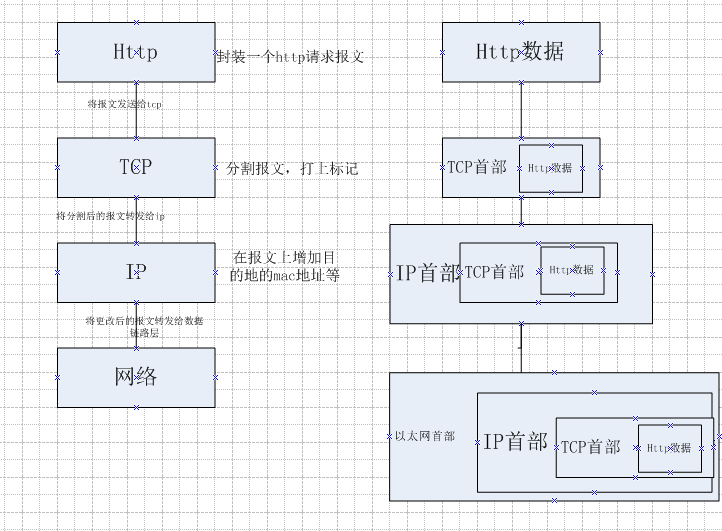
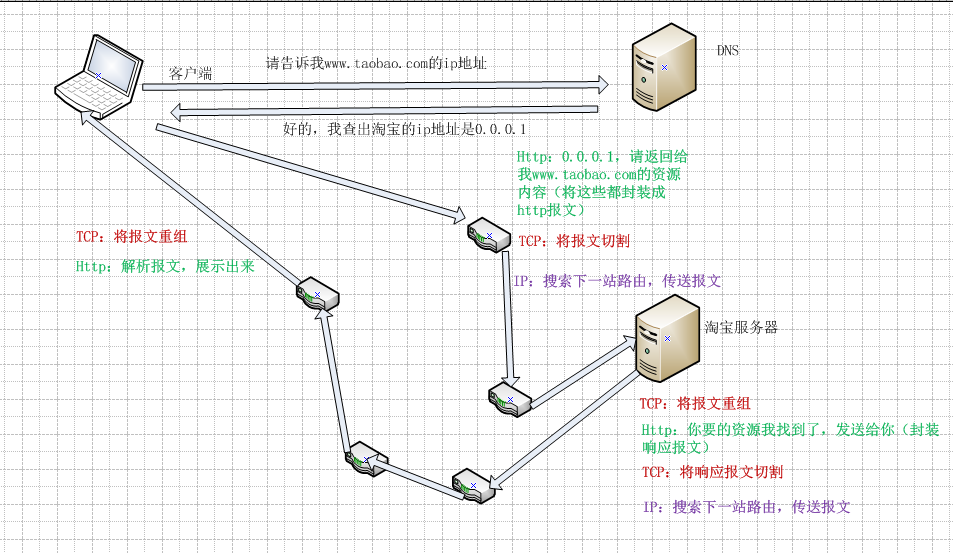
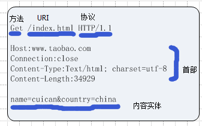
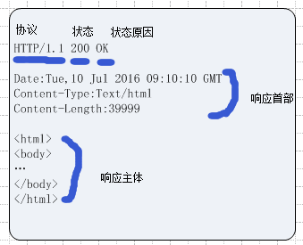

一、http详细理解
上一篇是给小白介绍的http的知识，这一篇是针对http细节进行剖析，并介绍整个http请求生命周期内涉及到的其他协议，就是http和他的小伙伴们是如何协同工作的。
TCP/IP协议族
先来认识http所属的大家族–TCP/IP协议族。网络的运转，不是靠http一个协议就可以的，而是整个大家族的事情，每个家族成员各尽其责，互相协作完成互联网的传输请求。TCP/IP是互联网相关的各类协议族的总称。这其中包括：Http、TCP、IP、FTP、UDP、ICMP、SNMP、PPPoE、DNS、FDDI等等。这些协议按层次进行分类：应用层（http、dns、ftp、snmp）、传输层（tcp、udp）、网络层（Ip、icmp internet控制报文协议）、数据链路层（PPPoE基于以太网的点对点协议、FDDI光纤分布式数据接口）。
思考一个问题：为什么分层？而不是由一个协议统筹管理呢？
层级之间如何传输数据的呢？下面是一个简易图，思考一个问题，接收端的数据接收流程是怎样的？

http与Ip、TCP、DNS

在初始的http协议版本中，每进行一次http通信就断开一次tcp连接，造成了性能的浪费。在1.1和1.0部分版本中，增加了持久连接的实现，持久连接表示：只要任一方没有明确说明要断开连接，那么连接就不会断开。
在持久连接的基础上，管线化的引入又使得响应的速度得到了进一步提升，管线化就像并发请求一样，可以不必等到上一个http响应结束后再发起下一个http请求，而是可以同时发起很多http请求。
简单的Http协议
一条的Http通信，必须有客户端和服务器端。由客户端发起，由服务器端响应信息作为结束。无论发起还是响应都有对应的http报文，分别称为请求报文和响应报文。
一、请求报文

从上往下，先是“方法”，“HTTP方法”有8个，这些方法是客户端告诉服务器它的意图是什么，分别为：
1、Get
该请求表明，客户端想访问服务器的资源，资源通过URI进行指定，有静态的文本资源，也有CGI的请求
2、Post
该请求表明，客户端想将信息传输给服务器
3、Put
和post有些类似，也用于将信息传输给服务器（还可用于上传文件），但是put要求数据是幂等的，详见此篇译文
4、Delete
该请求标明，客户端告诉服务器要删除有指定标识的资源
delete和put是不安全的，没有安全验证的机制，除非遵循rest标准时去开放，否则不建议使用
5、Options
用来查询uri指定的资源支持的方法
6、Trace
客户端用来查询请求是经过哪些代理后发送给服务器的。
7、Connection
要求建立隧道进行tcp通信。
8、Head
该方法用户校验uri的准确性和实效性，只返回报文首部，不返回报文主体
紧跟在方法后边的是uri和http协议版本号，方法、uri、协议版本在一行，统称为请求行。
接下来中间的一段为首部，首部字段有很多，分为请求首部、通用首部、实体首部。具体的首部会在后续的文章进行说明。
最后是报文主体，存储了一些被发送到客户端的数据，比如登录时的用户信息。
二、响应报文

响应报文的第一行为“状态行”，描述了响应结果的状态码。下面是最常用的14种状态码：
以2开头的状态码表示请求被正确处理了
1、200 OK
表示请求被正常处理，返回的响应报文中，报文实体会因请求的方法而不同，比如Get方法则请求的资源将会在报文实体中返回；比如Head方法，请求资源的实体首部不随报文主体作为响应返回。
2、204 No Content
表示请求被正常处理，但是不会在响应报文中没有任何报文主体。
3、206 Partial Content
表示请求被正常处理，但是该请求是范围请求，即通过content-range首部字段指定范围的实体内容
以3开头的状态码表示浏览器需要执行某些特殊的处理，才能正确处理请求
1、301 Moved Permanently
表示该url已经被永久性重定向了，并在响应中的响应首部字段“Location”中指定了新的url。
2、302 Found
表示该url被临时重定向了，并在响应中的响应首部字段“Location”中指定了新的url。比如客户端为移动设备，则会临时重定向到专为移动设备分配的url上。
3、303 See Other
303和302类似，但是303表示希望客户端以Get方法重定向到另一个URI上去。
4、304 Not Modified
表示当客户端发送“附带条件”的请求时，服务器端允许请求访问资源，但请求为满足条件。这时候是不会返回响应报文主体的。
5、307 Temporary Redirect
和302意义相同
以4开头的状态码表示客户端发送错误
1、400 Bad Request
该状态码表示请求报文中存在语法错误。当错误发生时，需修改请求的内容后再次发送请求。
2、401 Unauthorized
该状态码表示发送的请求需要通过Http认证的认证信息，如果之前已经认证过一次，则表示认证失败。
3、403 Forbidden
该状态码表示对请求资源的访问被服务器拒绝了。
4、404 Not Found
表明服务器上无法找到请求的资源。其次也可以在服务器拒绝请求且不想说明理由时使用。
以5开头的状态码表示服务器错误
1、500 Internal Server Error
该状态码表示服务器端在执行请求时发生了错误
2、503 Service Unavailable
表示服务器处于超负载状态，或者停机维护。
3、502？？？网关错误
4、504 网络错误
中间一段为首部，分为响应首部、通用首部、实体首部。
最后是响应报文，存储了从服务器请求回来的信息。
Cookie的诞生
http协议是无状态协议，也就是说http不会保存曾经的所有请求和响应。当用户曾经发起了登录请求，再发起购买请求时就无法知道用户是否登录过了，因为所有之前的http请求从http处是获取不到的，为了满足这样的业务，cookie诞生了。服务器端保存cookie信息并在响应报文中发送一个set-cookie的首部字段，客户端就会保存cookie信息了，当下次客户端再发起http请求时就会将cookie信息自动加入到请求报文中，服务器端收到这个请求后，根据cookie判断是哪个客户端发来的，然后做响应的业务处理。
首部字段有很多，分为通用首部、请响应首部、实体首部。 大家可以自行去查阅每个首部所代表的含义。
先介绍到这里，接下来会进一步总结。
Comments